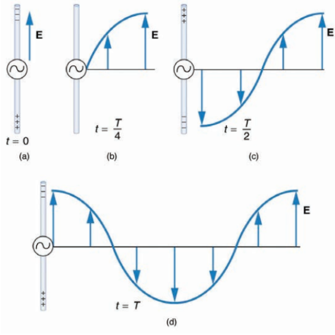

1. Introduction
The beauty of a coral reef, the warm radiance of sunshine, the sting of sunburn, the X-ray revealing a broken bone, even microwave popcorn. The list of electromagnetic waves, which includes everything from radio transmission waves to nuclear gamma-ray (-ray) emissions, is fascinating in and of itself.
Even more remarkable is the notion that all of these different events are manifestations of the same phenomenon: electromagnetic waves. What are electromagnetic waves, and how do they work? How could they be made, and how do they get around? How can we make sense of and arrange their vastly different properties? What's the connection between them and electric and magnetic effects? These and other issues will be discussed.
Discovering a new phenomenon
It's worth noting right away that theory predicted the broad phenomenon of electromagnetic waves before it was discovered that light is a type of electromagnetic wave. The prediction was made by James Clerk Maxwell in the mid-nineteenth century, when he developed a single theory that encompassed all known electric and magnetic effects at the time. He coined the term "electromagnetic waves" to describe the phenomenon that his theory anticipated.
James Clerk Maxwell
(born June 13, 1831, Edinburgh, Scotland—died November 5, 1879, Cambridge, England)He was a Scottish physicist who is best known for developing electromagnetic theory. Most current physicists consider him to be the nineteenth-century scientist who had the biggest impact on twentieth-century physics, and he is rated with Sir Isaac Newton and Albert Einstein for the fundamental nature of his discoveries.
Maxwell invented the concept of electromagnetic radiation, and his field equations, which were based on Michael Faraday's measurements of the electric and magnetic lines of force, prepared the way for Einstein's special theory of relativity, which established mass and energy equivalence. Maxwell's ideas also paved the way for the quantum theory, another key breakthrough in twentieth-century physics. His description of electromagnetic radiation led to the development of the ultimately unsatisfactory law of heat radiation, prompting Max Planck to formulate the quantum hypothesis—that is, the theory that radiant-heat energy is emitted only in finite amounts. Maxwell’s equations encompass the major laws of electricity and magnetism.
Maxwell’s Equations
- Electric field lines originate on positive charges and terminate on negative charges. The electric field is defined as the force per unit charge on a test charge, and the strength of the force is related to the electric constant ε0, also known as the permittivity of free space. From Maxwell’s first equation we obtain a special form of Coulomb’s law known as Gauss’s law for electricity
- Magnetic field lines are continuous, having no beginning or end. No magnetic monopoles are known to exist. The strength of the magnetic force is related to the magnetic constant µ0, also known as the permeability of free space. This second of Maxwell’s equations is known as Gauss’s law for magnetism.
- A changing magnetic field induces an electromotive force (emf) and, hence, an electric field. The direction of the emf opposes the change. This third of Maxwell’s equations is Faraday’s law of induction and includes Lenz’s law.
- Magnetic fields are generated by moving charges or by changing electric fields. This fourth of Maxwell’s equations encompasses Ampere’s law and adds another source of magnetism—changing electric fields.
Maxwell's projected waves would be oscillating electric and magnetic fields, which would be characterized as electromagnetic waves (EM waves). Electromagnetic waves could exert forces on charges at considerable distances from their source, making them observable. Maxwell calculated that electromagnetic waves would travel at the rate provided by the equation.
Hertz’s Observations
The German physicist Heinrich Hertz (1857–1894) was the first to generate and detect certain types of electromagnetic waves in the laboratory. Starting in 1887, he performed a series of experiments that not only confirmed the existence of electromagnetic waves but also verified that they travel at the speed of light.
2. Definition of Electromagnetic Wave
Electromagnetic waves are also known as EM waves. Electromagnetic radiations are composed of electromagnetic waves that are produced when an electric field comes in contact with the magnetic field. It can also be said that electromagnetic waves are the composition of oscillating electric and magnetic fields.
3. Production of Electromagnetic Waves

We can learn a lot about electromagnetic waves (EM) by looking at how they are created. When current changes, so do the associated electric and magnetic fields, which move away from the source like waves. The diagram depicts a changing current in a long straight wire produced by an alternating current generator at its center.
The charge distribution on the wire produces the electric field (E) shown surrounding the wire. As the current changes, so does the E and the charge distribution. The changing field spreads at the speed of light. There is also an associated magnetic field (B) that spreads outward. Electric and magnetic fields are inextricably linked and propagate as electromagnetic waves. This is what happens in broadcast antennas like those found in radio and television stations.
A closer look at the diagram's one complete cycle reveals the periodic nature of the generator-driven charges oscillating up and down in the antenna and the electric field produced. At time t = 0, the charge separation is greatest, with negative charges on top and positive charges on the bottom, resulting in the greatest magnitude of the electric field (or E -field) in the upward direction. After one-fourth of a cycle, there is no charge separation and the field next to the antenna is zero, whereas the maximum E -field has moved away at speed c
The charge separation reverses as the process progresses, and the field reaches its maximum downward value, returns to zero, and then rises to its maximum upward value at the end of one complete cycle. The amplitude of the outgoing wave is proportional to the maximum charge separation. Because its wavelength (λ) is proportional to the period of the oscillation, it is smaller for short periods or high frequencies. (Wavelength and frequency are, as expected, inversely proportional.)
Electric and Magnetic Waves: Moving Together
According to Ampere's law, the current in the antenna generates a magnetic field, as illustrated in the diagram. The relationship between E and B is depicted in a single instant. The magnetic field changes in magnitude and direction as the current changes.
As shown in the diagram, the magnetic field lines propagate away from the antenna at the speed of light, forming the other part of the electromagnetic wave. Because they are both produced by the same movement and separation of charges in the antenna, the magnetic and electric parts of the wave have the same period and wavelength.
The electric and magnetic waves are depicted in figure 3 at the same time. A long straight wire antenna generates electric and magnetic fields that are exactly in phase. They are perpendicular to one another and to the direction of propagation, indicating that this is a transverse wave.
Electromagnetic waves generally propagate in all directions from a source, sometimes forming a complex radiation pattern. A linear antenna, for example, will not radiate parallel to its length. Figure 3 depicts the wave in one direction from the antenna to demonstrate its basic characteristics
Receiving Electromagnetic Waves
Electromagnetic waves, like sound waves, carry energy away from their source, much like a standing wave on a guitar string. An antenna for receiving EM signals operates in the opposite direction. Receiver antennas, like EM wave antennas, are specially designed to resonate at specific frequencies. Electrons in the antenna are accelerated by an incoming electromagnetic wave, resulting in the formation of a standing wave. When you turn on the radio or television, electrical components pick up and amplify the signal created by the accelerating electrons. After that, the signal is converted to audio and/or video format. Large receiver dishes are sometimes used to focus the signal onto an antenna.
4. Energy in Electromagnetic Waves
Anyone who has used a microwave oven is aware that electromagnetic waves contain energy. This energy is visible at times, such as in the warmth of the summer sun. It can also be subtle, such as the unfelt energy of gamma rays, which can destroy living cells. Because of their electric and magnetic fields, electromagnetic waves can introduce energy into a system. These fields can exert forces and move. charges in the system and, as a result, perform work on them If the frequency of the electromagnetic wave is the same as the system's natural frequencies (for example, microwaves at the resonant frequency of water molecules), energy transfer is much more efficient.
5. The Characteristics of EM Waves
- The electromagnetic waves are produced by an accelerated charge
- These waves do not require any material medium for propagation
- Magnetic field lines are continuous, having no beginning or end. No magnetic monopoles are known to exist. The strength of the magnetic force is related to the magnetic constant µ0, also known as the permeability of free space. This second of Maxwell’s equations is known as Gauss’s law for magnetism.
- The directions of variations of electric and magnetic fields are perpendicular to each other and also perpendicular to the direction of propagation. Thus, electromagnetic waves are transverse.
- The variations in electric and magnetic fields occur simultaneously and the fields acquire their maximum values E0 and B0 at the same place and at the same time
- In free space, the magnitudes of electric and magnetic fields in electromagnetic waves are related by E/B=c
- The energy in electromagnetic waves is divided, on the average, equally between electric and magnetic fields
- The energy density (energy per unit volume ) in an electric field E in vacuum is:
and that in magnetic field B(vec) is:Energy associated with electromagnetic waves is :
- The electric field vector is responsible for the optical effects of electromagnetic waves and is called the ‘light vector
- Electromagnetic waves, being uncharged are not deflected by electric and magnetic fields.
- The electromagnetic waves like other waves carry energy and momentum. Since it carries momentum, electromagnetic waves also exert pressure called ‘radiation pressure’.